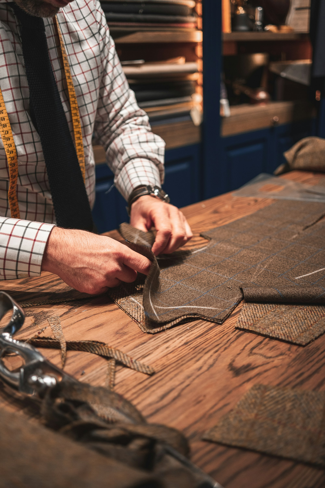
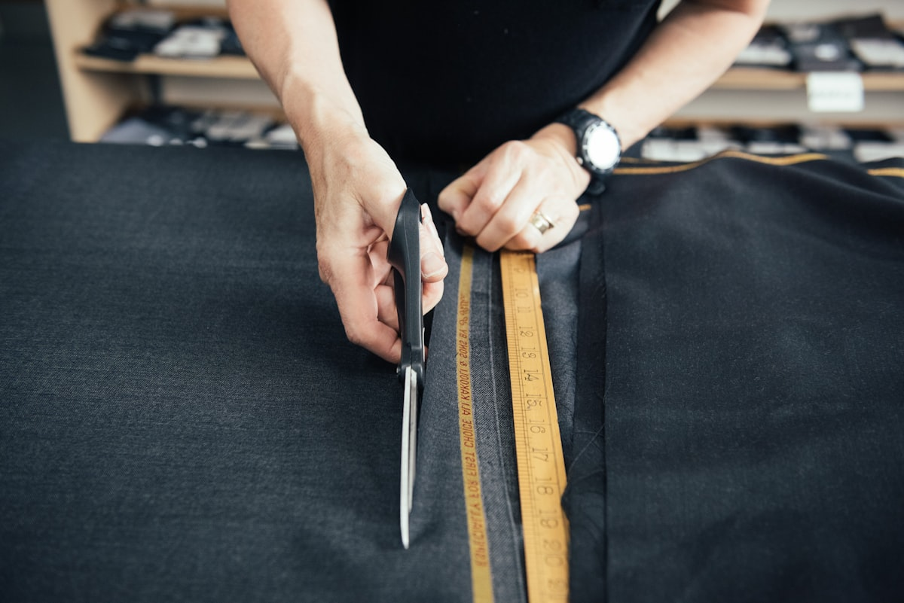

Terno sob medida
Do tecido ao botão final, construído nas suas medidas com 2 provas e entrega marcada.

Medida por IA, corte de mestre e prova marcada no zap. Sob medida de verdade, sem as 5 idas ao atelier.
Terno bom não se compra pronto. Se constrói em cima do seu corpo, com medida da máquina e olho de quem corta há décadas.
Do tecido ao botão final, construído nas suas medidas com 2 provas e entrega marcada.
Fotos guiadas geram sua pré-medida antes da primeira prova. Chega pronto, sai perfeito.
Noivo, padrinhos e pai com o mesmo caimento e entrega sincronizada para o grande dia.
Barra, lateral, ombro e punho em peça pronta. O terno de loja vira sob medida.
Colarinho, punho e monograma do seu jeito, no algodão certo para o clima.
Levamos tecidos e provador até você para medida e escolha sem sair.
3 perguntas e a IA indica o caminho ideal, do tecido ao primeiro passo.

A IA extrai 40 medidas das suas fotos guiadas. O mestre valida cada uma na prova e o corte sai sem chute. A segunda prova é só celebração.
O formulário está indisponível enquanto o canal de atendimento é confirmado.
Atendimento com hora marcada.
Traga a ocasião que a gente resolve o resto.
Em média 3 semanas com 2 provas. Para casamento, comece 2 meses antes e durma tranquilo.
Não. Ela adianta 90 por cento do trabalho para a primeira prova ser cirúrgica. O olho do mestre fecha os 10 finais.
Sim. Barra, lateral, ombro e punho com acabamento de atelier.
Sim, com entrega sincronizada e padrão único de caimento para as fotos.